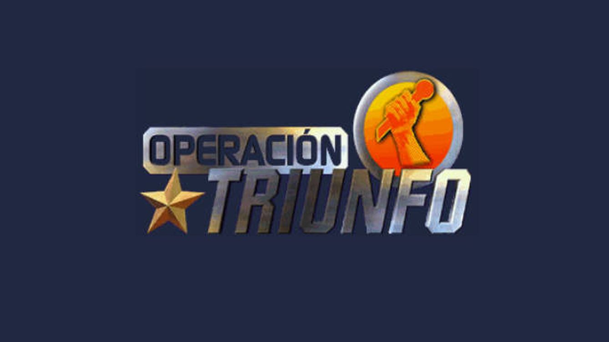
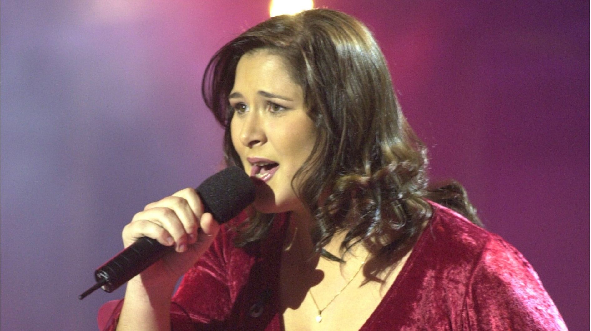
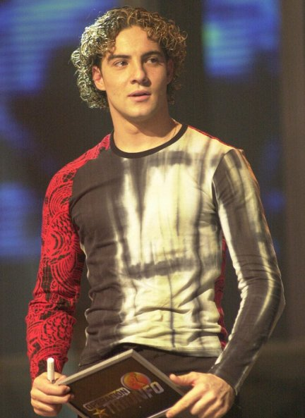

Operación Triunfo és el concurs de talent musical més famós d'Espanya. Des de la seva primera edició l'any 2001, molts concursants han passat per l'Acadèmia per actuar a les gales setmanals en directe i intentar guanyar el concurs.
A cada gala setmanal, els concursants canten cançons individuals o en duet, el jurat fa les seves valoracions i el públic vota per triar el favorit de la setmana i salvar als nominats.

| Primera Edició | Edició Més Popular |
|---|---|
| Edició OT 1 (2001) | Edició OT 2017 |
| Guanyadora: Rosa López | Guanyadora: Amaia Romero |
| Concursant destacat: David Bisbal | Concursant destacada: Aitana Ocaña |

